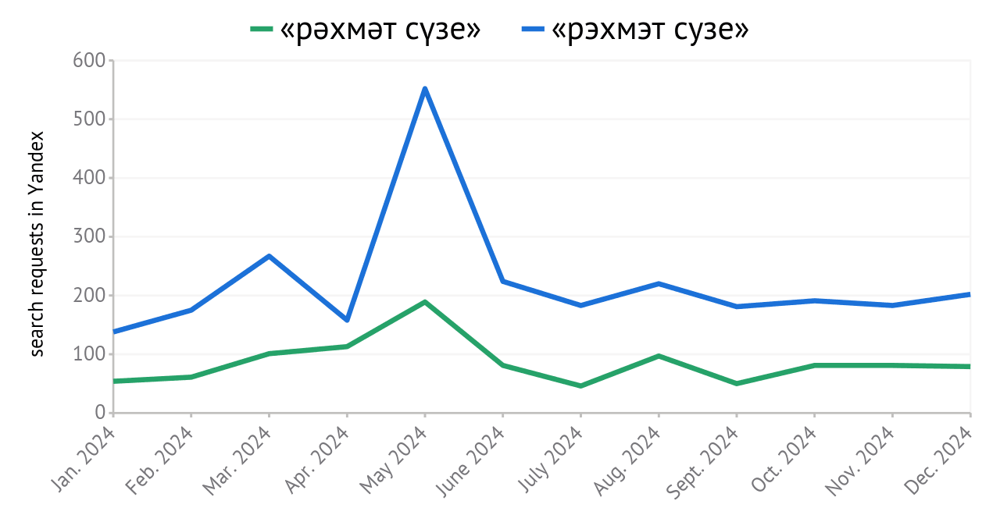
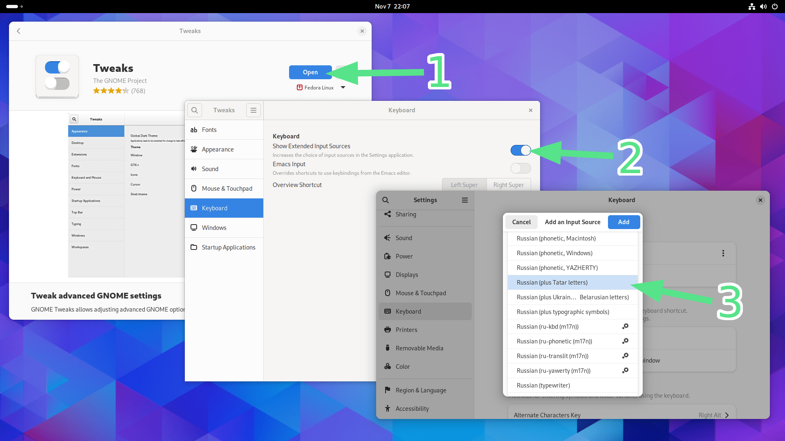
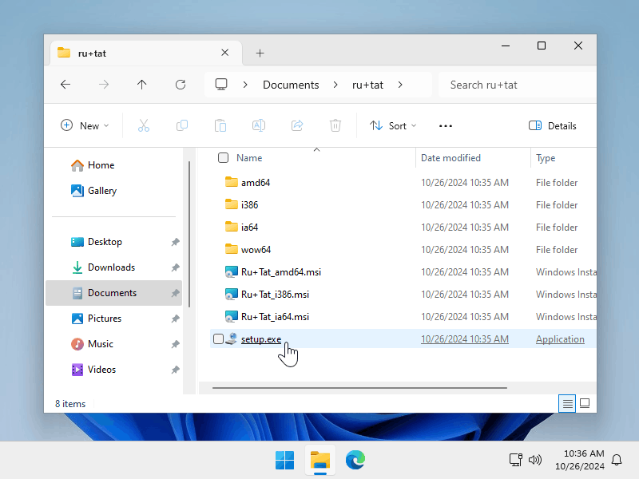
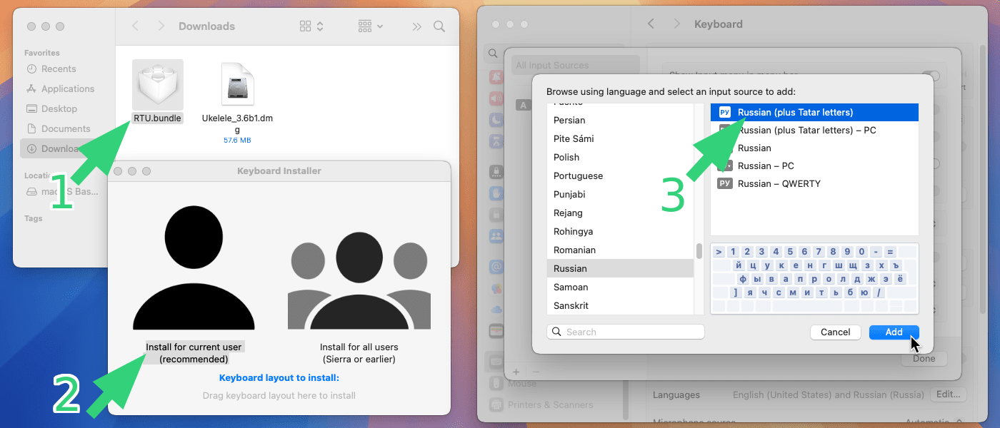

Russian-Tatar united keyboard layout
What is it?
This is a new keyboard layout that is the same as the Russian one but with Tatar letters set as an alternative symbols (with the alt gr or right alt pressed). The Tatar letters are located above their Russian pairs (alt gr + а for "ә", alt gr + н for "ң", etc.), so that it is easy to find them and no need to remember their location.
Russian (plus Tatar letters)
What is it for?
Many Tatars use Russian language as the primary language of communication, so they have Russian keyboard layout on their devices. Classic Tatar layout does have all the Russian letters in it which in theory allows you to use it as a universal layout for both languages. But the layout is different from Russian one — it was made for comfort typing in Tatar so the Russian letters that are rarely used in Tatar language (ё, ж, ц, щ, ъ, ь) are set as an alternative symbols (you need to press alt gr for using them). This makes writing in Russian inconvenient, so many people refuse to use the classic Tatar layout.
Tatar keyboard
All this led us in a situation where Tatars can't write in Tatar language because they don't have the proper keyboard layout. Here is the statistics showing how Yandex users search for the Tatar song by Alina Sharipzhanova "Рәхмәт сүзе":

As we see the count of requests that use transliteration to Russian alphabet ("рэхмэт сузе") is significantly exceeds the count of requests in Tatar language. People in search requests more often write Tatar words using the Russian layout.
That is the reason why first of all this new Russian-Tatar layout is a Russian layout. All the letters and symbols are keeping their places. Those who would change their Russian layout to this Russian-Tatar one would not consider any differencies — no discomfort, no need to retrain or change habits, everything is the same. But as a bonus, there would be the way to write in Tatar language if needed.
Here is a table that shows the difference between the classic Tatar and Russian-Tatar united layouts. The corresponding columns indicate which keys (according to the Russian layout) need to be pressed to get the selected letter.
| letter | Russian | Tatar | Russian-Tatar united |
|---|---|---|---|
| щ | щ | alt gr + щ | щ |
| ц | ц | alt gr + ц | ц |
| ъ | ъ | alt gr + ъ | ъ |
| ё | ё | alt gr + ё | ё |
| ж | ж | alt gr + ж | ж |
| ь | ь | alt gr + ь | ь |
| ә | - | щ | alt gr + а |
| ө | - | ц | alt gr + о |
| ү | - | ъ | alt gr + у |
| һ | - | ё | alt gr + х |
| ң | - | ж | alt gr + н |
| җ | - | ь | alt gr + ж |
As we can see, the Russian-Tatar united layout allows you to conveniently write in Russian, but leaves the ability to write in Tatar, and the location of the buttons is very easy to remember. This will make it possible to easily abandon the Russian layout in favor of the Russian-Tatar one and not only write search requests in Tatar, but also use Tatar in everyday communication, preserving cultural identity and allowing the language to spread.
What else does the new layout contain?
Creating a new keyboard layout today, we want to keep in mind the modern keyboard usage conditions. That's why Russian-Tatar united keyboard layout is based on Russian with typographic symbols, which is another new keyboard layout.
Russian (plus typographic symbols)
To learn more about how the Russian-Tatar united keyboard layout was formed, go to the corresponding page:
For mobile devices
For mobile devices that use on-screen keyboard the algorithm is similar: keep everything the same as Russian layout including dictionaries for swipe input and autocorrection but add extra characters above related Russian ones. Those characters are selected by holding the button: hold "а" for "ә", hold "н" for "ң" etc.
It is still a layout for Russian language but with additional characters for Tartar.
How to install?
Linux
The layouts are already present in the system and you can install them through the settings app. You should turn exotic layouts on first.

If your system uses an older version of xkeyboard-config (<2.38 for Russian with typographic symbols and <2.39 for Russian with Tatar letters), you can use layout files from here, and instructions for enabling it in the system from here.
Windows
To install the layouts described here in Windows download them from the links below.
Unzip the downloaded archive, find the
setup.exe file and launch it. After you allow the file to
be executed and the installation is successful, the layout will be
selected as one of your system layouts.

If your browser doesn't let you to download the archive you can build the layout yourself using the config (ru+typo.klc, ru+tat.klc) and Microsoft Keyboard Layout Creator.
But if you (as I am) want the Russian-Tatar layout to be available in Windows out of the box, then support the following proposal in the Microsoft Feedback Hub:
MacOS
You can download the Russian-Tatar keyboard layout for macOS using the link below. Launch the downloaded file and follow the instructions. There is no Russian typographic layout because typographic symbols are already present in the standard Russian layout on macOS.

Try in browser
You can use special playground to try this layout in browser without having to install anything: